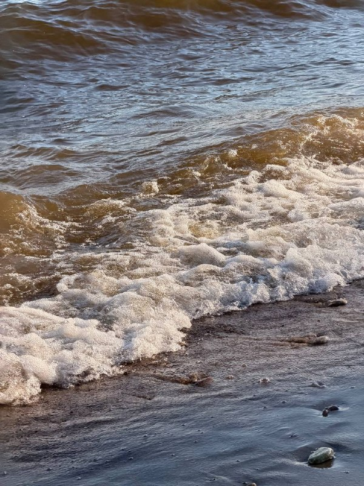
01
Общество и городская среда · событие дня

Стороны договорились развивать промышленную кооперацию, используя возможности торгово-логистического центра в Ташкенте и портовой особой…
Глава города Александр Болдакин поручил директору Муниципального центра управления Олегу Грибалёву ставить на контроль и отрабатывать с исполнителями каждый вопросам стартовавшего отопительного сезона, который ульяновцы могут оставить по круглосуточным многоканальным телефонам 737-911 и 05.…
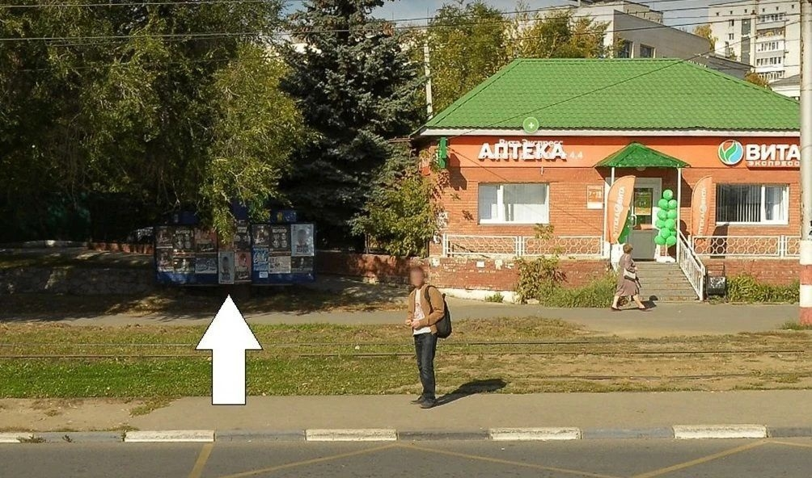
В двух районах Ульяновска в течение октября проведут принудительный демонтаж самовольно установленных хозяйственных сооружений и рекламных конструкций — об этом сообщили в администрации города.…
Ульяновскую область с официальным визитом посетил Чрезвычайный и Полномочный Посол Республики Узбекистан в Российской Федерации Ботиржон Асадов — о результатах переговоров сообщил губернатор Алексей Русских.…
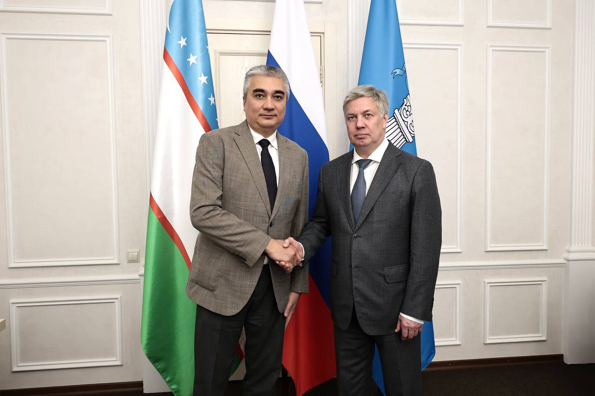
Глава города Александр Болдакин поручил директору Муниципального центра управления Олегу Грибалёву ставить на контроль и отрабатывать с исполнителями каждый вопросам стартовавшего отопительного сезона, который ульяновцы могут оставить по круглосуточным многоканальным телефонам 737-911 и 05.…
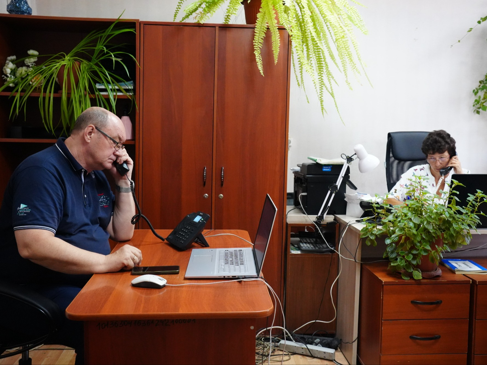
14 октября исполняется 122 года со дня рождения одного из первых сотрудников Симбирской губернской ЧК, депутата Верховного Совета СССР III, IV, V созывов, нашего земляка генерал-майора Алексея Петровича Бызова.…

По поручению главы города Александра Болдакина муниципальные службы продолжают мониторинг территорий на предмет нахождения на них незаконно установленных объектов.…
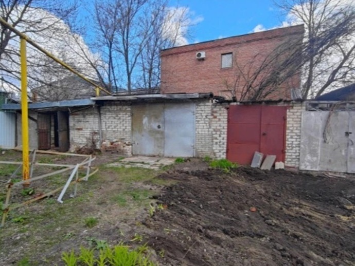
14 октября были рассмотрены вопросы общественно-политического развития, обеспечения устойчивой работы социально значимой инфраструктуры, поддержки ветеранов специальной военной операции, укрепления межнационального согласия, а также старт новых окружных общественных проектов.…

А сэкономленные государственные деньги депутаты предлагают пустить на поддержку российских старшеклассников.…
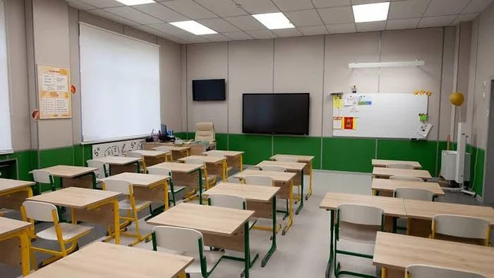
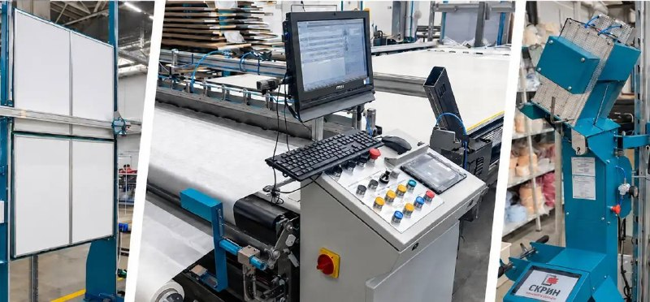
Особенно заметно новость может изменить работу местных производителей штор, дизайнеров и компаний по солнцезащите.…
Сегодня им покажут ПОЭЗ «Ульяновск», станкостроительный завод и «Даккор Волга».
Стороны договорились развивать промышленную кооперацию, используя возможности торгово-логистического центра в Ташкенте и портовой…
✅ За последний год фиксируем рост товарооборота в 2 раза.…
По поручению главы Ульяновска Александра Болдакина дорожники поддерживают непрерывность производственных процессов на ключевых участках города, в том числе – на Московском шоссе, где накануне после фрезерования на первом участке от путепровода до пересечения с улицей Автозаводской по направлению в центр города они приступили к асфальтированию дорожного полотна в рамках ликвидации колейности.…
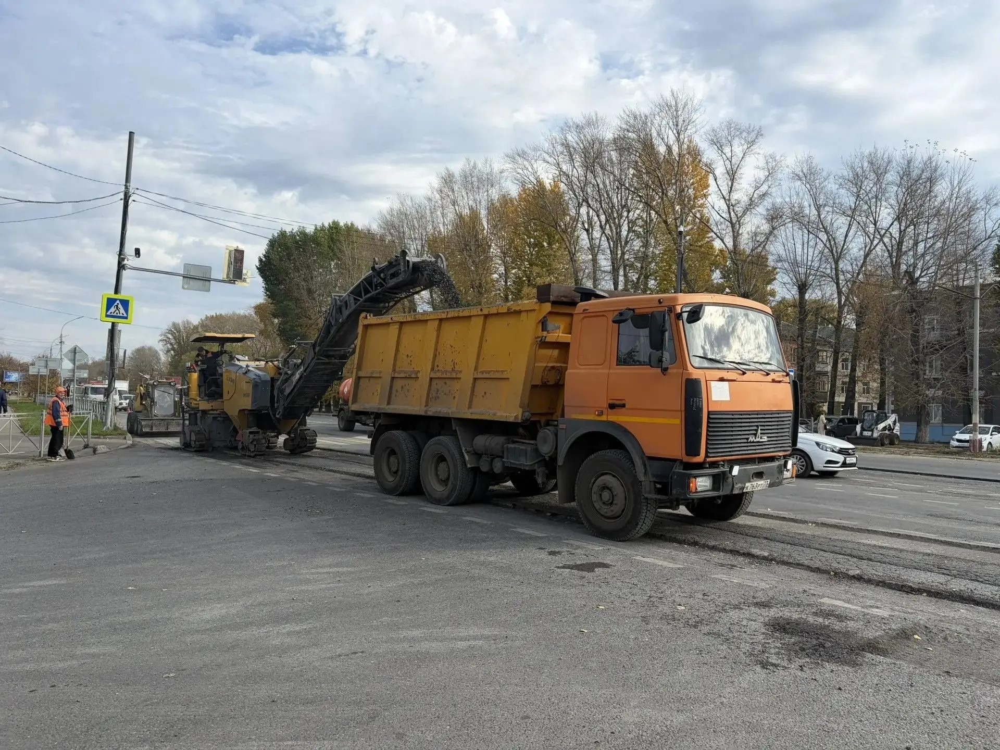
Для малого бизнеса: — отмена УСН «Доходы» со ставкой 6% и патентной системы; — снижение порога выручки для уплаты НДС на АвтоУСН с 60 до 20 млн рублей.…
Видимо, для тех, кто хочет не только ребёнка, но и сувенир.…
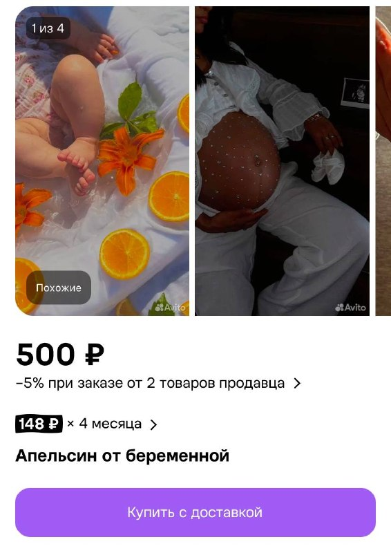
Об этом сообщает Журнал Авито Авто со ссылкой на пресс-службу завода.
Новые меры поддержки региональному бизнесу были бы очень кстати: наш регион вошел в тройку антилидеров по стране с наиболее заметным сокращением числа коммерческих предприятий.…
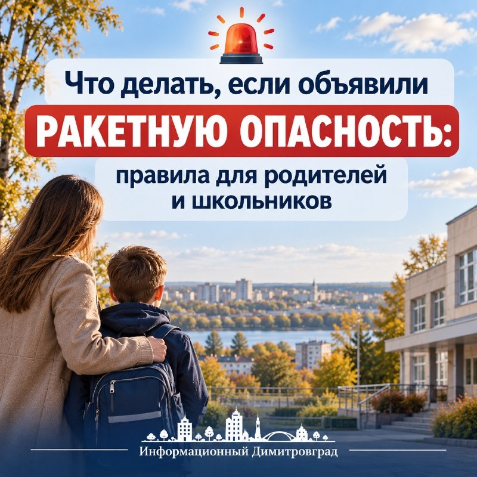
Работы шли по плану на 2027 год, но начались раньше.…

В настоящее время для зачисления в вуз предоплата не требуется.…
Пишут в личку родители: Даша, подними эту тему! Что делать-то в случае ракетной опасности родителям школьников?…
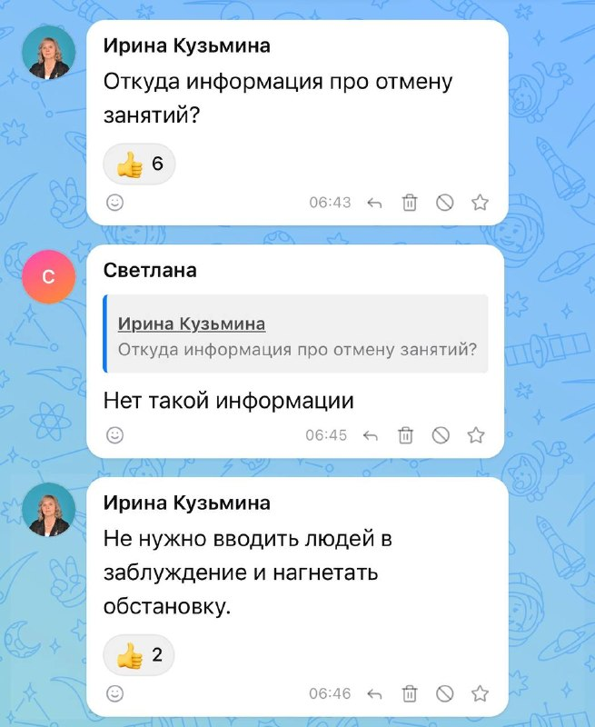
Парень по имени Йозеп постоянно терпит насмешки и издевательства со стороны одноклассников.…
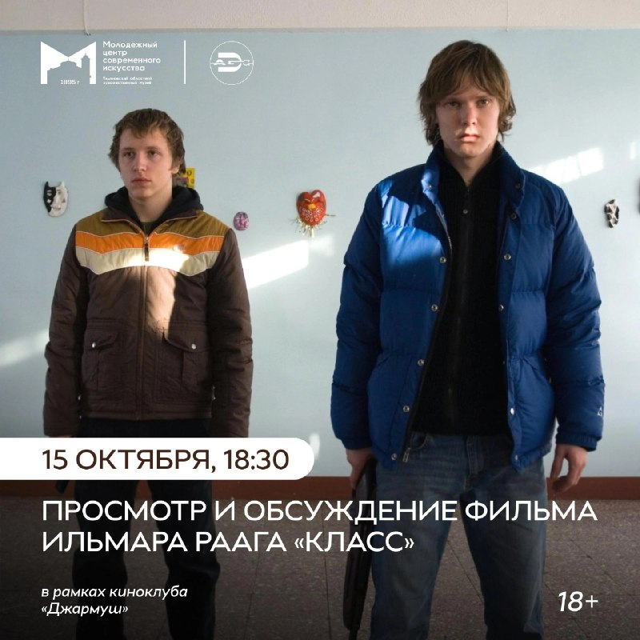
Мой сын учится в 3 классе, сказали что поручений по поводу отмены не было и нужно идти на занятия.…
📱 Что нужно сделать: Установите приложение РСЧС от МЧС — через него будут приходить оперативные предупреждения.…
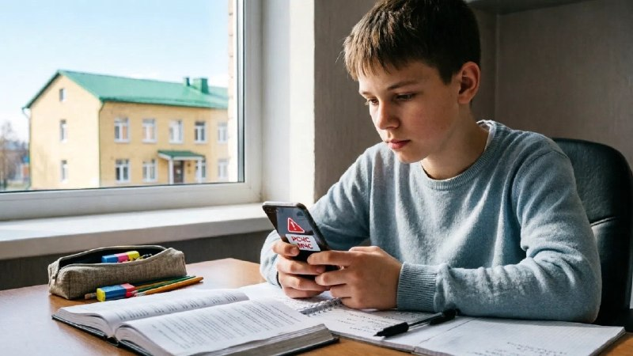
Тросы он перекусывал специнструментом, а технику уносил с улиц Северный Венец, Орлова и из переулка Красноармейского.…
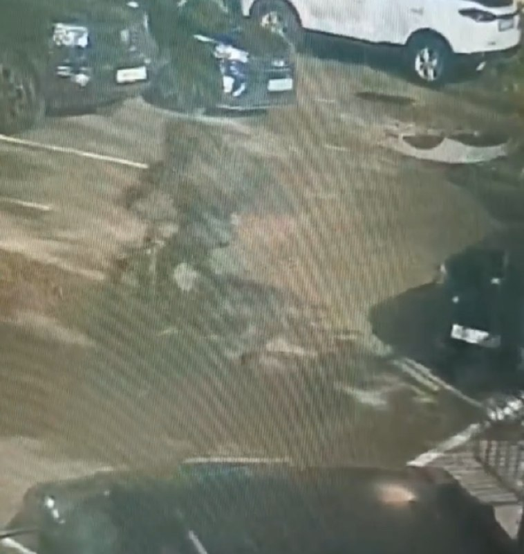
Проверки проходили совместно с подразделениями по делам несовершеннолетних и специалистами Дирекции безопасности дорожного движения.…
Если вы на улице или в транспорте — найдите ближайшее защищённое место.…

Одной из добычей стали сразу два дорогих велосипеда со двора на Северном Венце — на 100 тысяч рублей.…
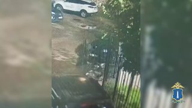
Двадцать пять административных материалов составили сотрудники Госавтоинспекции Ульяновской области за прошедшую неделю в ходе рейдов по выявлению нарушений среди водителей мототранспорта — об этом сообщили в региональном Управлении МВД.…

Ночью он выходил на «охоту» в маске, перчатках и темном капюшоне, перекусывая тросы инструментом.…
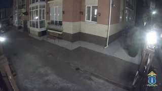
За кражу электроэнергии и повреждение объектов жизнеобеспечения виновным грозит уголовная ответственность — вплоть до двух лет лишения свободы.…

Муниципальный центр управления Ульяновска зафиксировал свыше 2 700 обращений граждан по вопросам старта отопительного сезона — общая статистика работы горячей линии приведена в отчете городской администрации.…
Бензин с начала года подорожал на 21,37%. Росстат зафиксировал рост розничных цен на бензин автомобильный с начала 2024 года.…
Ограничения также затронут переводы на собственные холодные кошельки.
Что вас ждет в новом доме: ✔️ Дом сдан! Есть возможность заказать готовый ремонт. ✔️ Свое автономное отопление.…
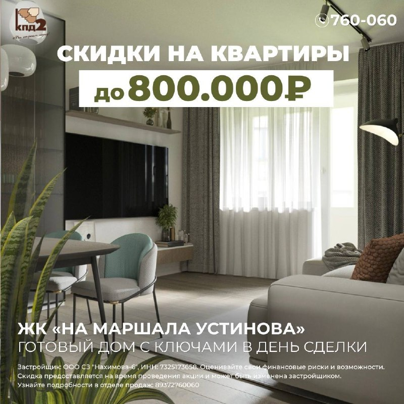
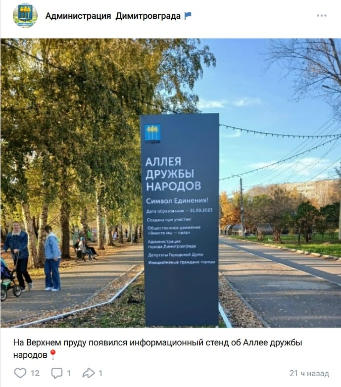
На участке перед МКАД красные стрелки указывают на съезд, который ведет на юг города, синие — на север.…
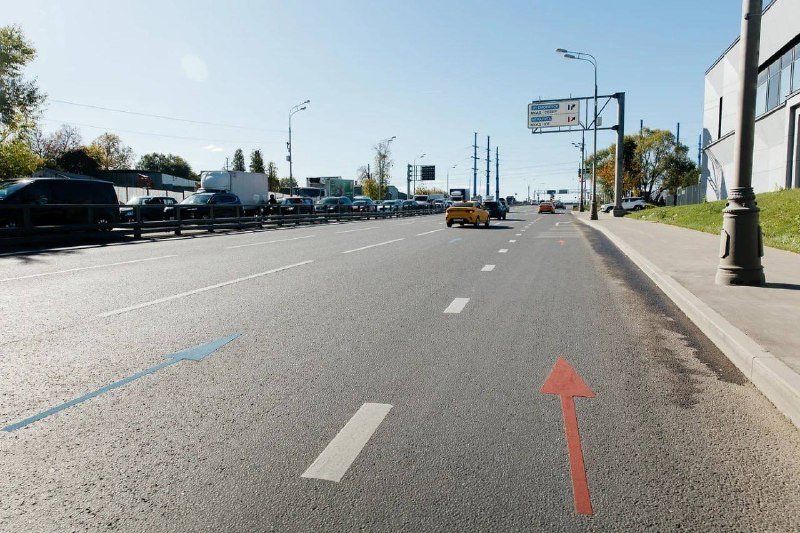
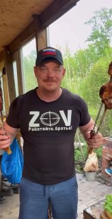
Дорожные службы Ульяновска приступили к укладке нового асфальтобетонного покрытия на Московском шоссе в рамках ликвидации опасной колейности — об этом сообщили в администрации города.…
министра просвещения и воспитания Ульяновской области Наталья Семенова отметила, что главная цель инициативы – предоставить школьникам полезную и познавательную информацию во время перемен.…

На улицах города начали работать эвакуаторы с кранами-манипуляторами — такая техника может достать автомобиль, даже если он зажат между другими транспортными средствами.…
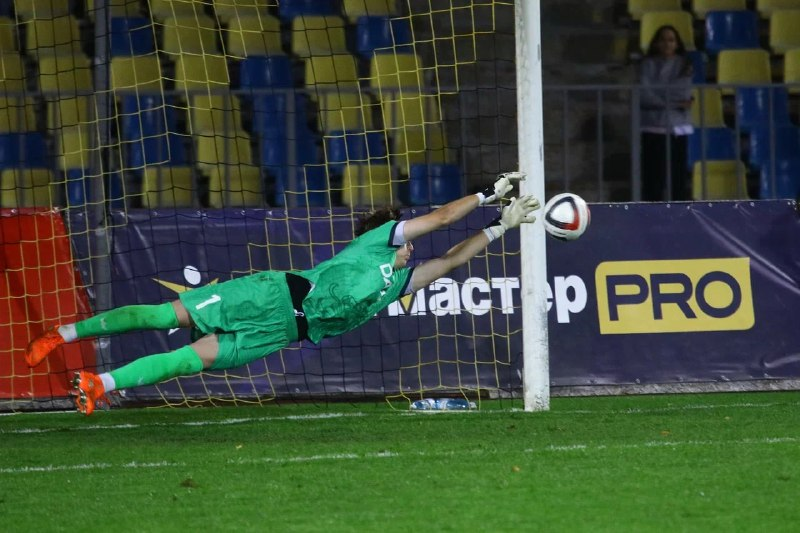
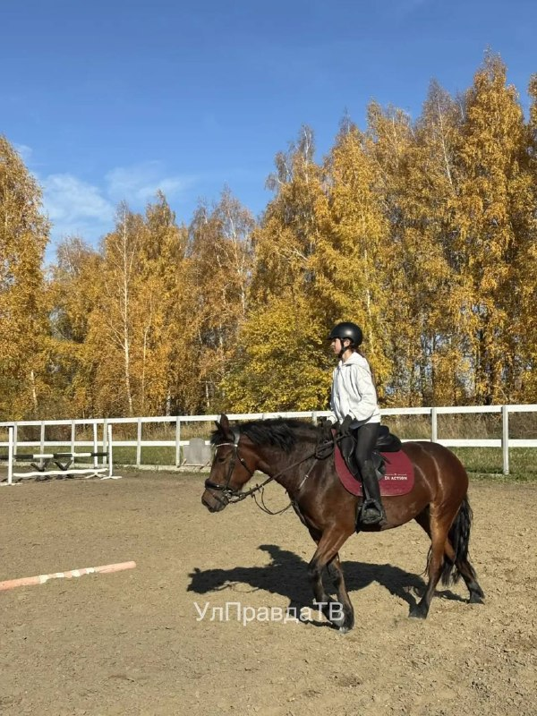
Ульяновская «Волга» в серии пенальти одержала победу над «Муромом» в матче пятого раунда пути регионов Кубка России по футболу.…

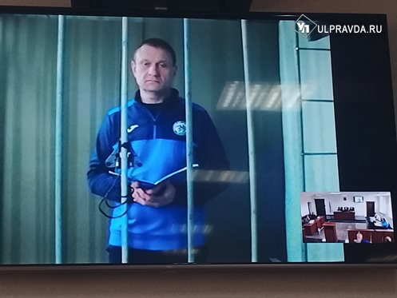
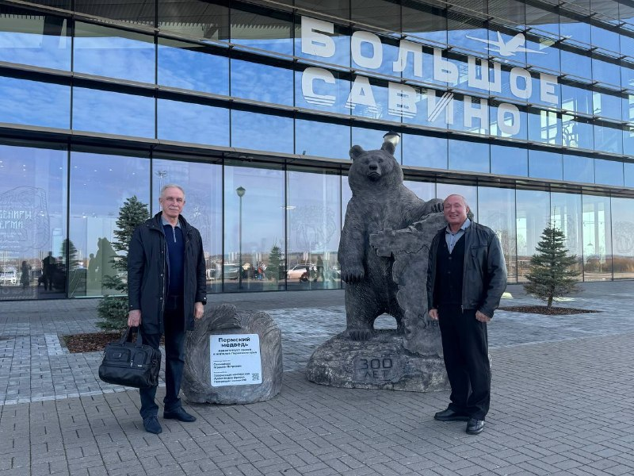
Именно в этом регионе сразу три города имеют статус «Город трудовой доблести».…
В списке редакции есть комедии, триллеры, хорроры, кино для семейного просмотра и классика мирового кинематографа.…

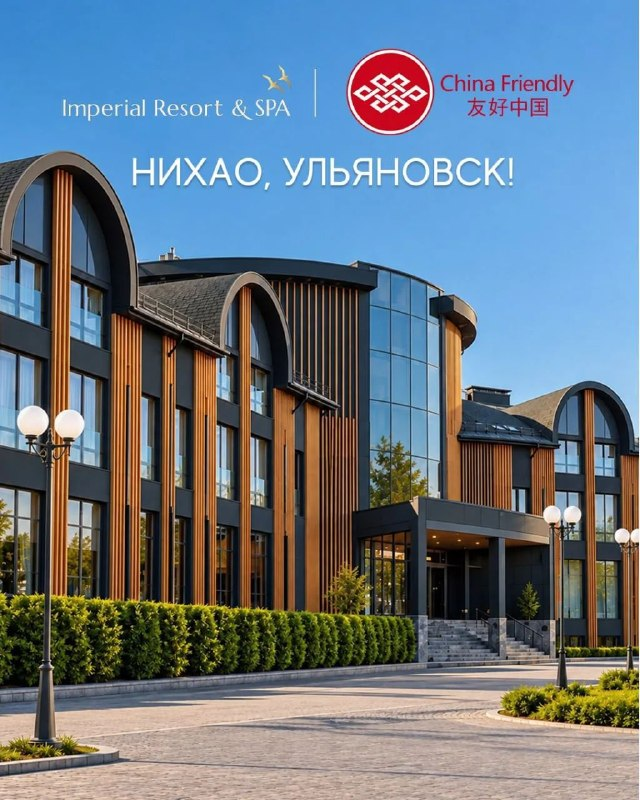
По многим строкам пока прописан дефицит — потребности в финансах на ближайшие годы больше, чем проектировки бюджета.…
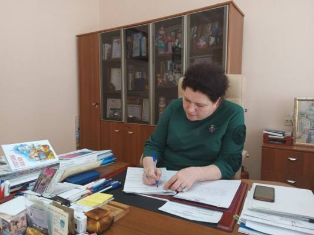
| Тема | Завтра | Ожидание | Уверенность |
|---|---|---|---|
| БПЛА и воздушные угрозы | ↑ рост | ~53.8 упоминаний | средняя |
| Медицина | ↓ спад | ~1.1 упоминаний | средняя |
| Школы и вузы | ↓ спад | ~24.2 упоминаний | средняя |
| Авиапром / УКБП / Ил-114 | ↓ спад | ~0.3 упоминаний | средняя |
| Транспорт и дороги | ↑ рост | ~33.1 упоминаний | средняя |
| ЖКХ, газ, тепло | ↓ спад | ~8.6 упоминаний | средняя |